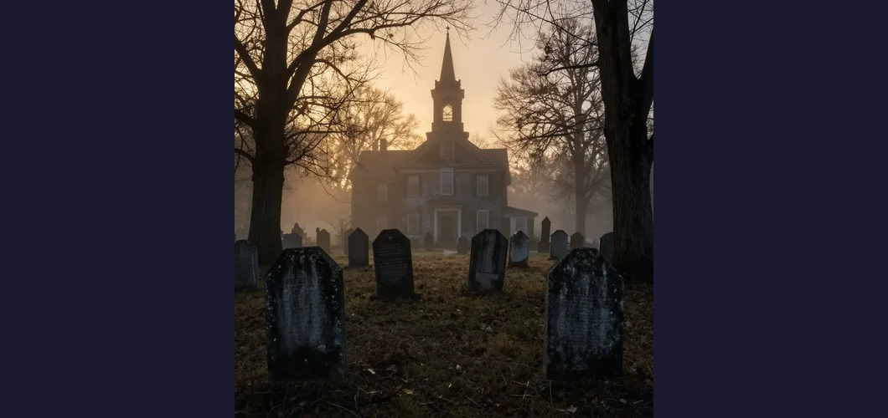

The New England Vampire Panic of 1892: When a TB Outbreak Spawned a Vampire Hunt

A cold morning in Exeter
It was March 17, 1892. A group of men gathered at a cemetery in Exeter, Rhode Island. They had come to open the graves of a farmer’s family.
The farmer was George Brown. He had lost his wife Mary Eliza in 1883. His daughter Mary Olive died in 1884. His daughter Mercy Lena died in early 1892. All three had the same illness, and now his son Edwin had it too.
The neighbors had an idea about why. They thought that one of the dead women was not at rest. They believed that she rose at night and drained the life of her relatives. To save Edwin, they said, the graves must be opened.
George Brown reportedly did not believe this himself. But he went along with his neighbors. Why would a father agree to such a thing? To find out, we must look at the illness.
The sickness with no cure
The illness was called consumption. Today we call it tuberculosis. In the 18th and 19th centuries it was one of the most feared diseases in history. In 19th-century America it was a leading cause of death. By some estimates, as many as one in every four deaths came from it.
The name fits what the sickness seemed to do. It seemed to eat people from the inside out. A cough would not go away. Then the person lost weight, grew pale and weak, and sweated through the night. Over months or years, they wasted away.
A tiny germ causes the disease. It is a bacterium called Mycobacterium tuberculosis. Robert Koch announced that he had found it in 1882. But in country villages, the news had not changed old beliefs. For them, the sickness was a mystery.
So what did a farmer see when his family fell ill?
Why blame the dead?
Picture a farmhouse. One person dies of consumption. Soon another person falls ill. Then another. A farmer who watched this saw a pattern that looked like something from beyond the grave.
He was right about one thing. The sickness did spread inside a household. It passes between people who live close together. But his explanation was wrong. He could not see the germ, so he blamed the dead person.
That mistake grew into a folk belief. It said that a person who died of consumption could drain the life of living relatives. This was not the vampire of Dracula or of films. There were no capes, no fangs, and no castles. The New England kind was quieter and more homely. In some ways that made it more frightening.
What did the neighbors do about it?
What the men found
The cure was to dig up the suspected body and look for signs. One sign was a body that looked unusually well kept. Another sign was liquid blood in the heart or other organs. People saw these as proof that the dead person was not truly dead.
At the Brown cemetery, a doctor named Harold Metcalf and a newspaper reporter were there. The bodies of Mary Eliza and Mary Olive had decayed as expected. But Mercy Lena had been placed in a crypt, because the ground was frozen in the cold winter. Her body looked oddly well preserved, and liquid blood was found in her heart and liver. The doctor said that this was normal for a body buried so recently.
The frightened villagers did not agree. They believed that Mercy Brown was draining the life of her relatives. They burned her heart and liver on a nearby rock. They mixed the ashes into a medicine for Edwin to drink. It did not work. Edwin died two months later.
This was not mindless mob violence. It was a ritual done with care and real belief, and often the grieving family took part.
Who called it a vampire?
Here is a surprise. The folklorist Michael Bell has studied this subject for decades. He found about 80 cases in the northeastern United States, most of them in New England. But he argues that the families did not use the word “vampire” at all.
Bell says that the label came mostly from newspapers. Reporters wanted an exciting story. They noticed the likeness between these rituals and the vampire legends of Europe. Those legends became famous when Bram Stoker’s novel was published in 1897. That was just five years after the Mercy Brown case.
Bell thinks that the practice is better seen as a folk medical practice than as a vampire myth. It was a desperate try to fight a frightening disease. The families used the only way of explaining things that they had.
Was Exeter the only town to do this? Far from it.
Not the first, not the last
The Brown case was just the most famous one. Bell found his earliest case from 1784. In 1788 and 1789, the family of Justus Forward in Belchertown, Massachusetts, was involved in one of the early cases. In 1817, the father of Frederick Ransom had his son’s body dug up in Woodstock, Vermont. Frederick had died of consumption at age 20. His heart was burned at a blacksmith’s forge. Around 1830, the Corwin family of the same town burned a dead son’s heart on the village green.
Even the writer Henry David Thoreau wrote about such a case. In his journal on September 26, 1859, he told of a Vermont family. Several of them had died of consumption. The family burned the organs of the one who died last, to keep the others from getting sick. Thoreau began the entry with the words “The savage in man is never quite eradicated.”
The pattern was always much the same. Several members of a family died of consumption. Then a dead relative was dug up, and the heart and other organs were burned.
Not every trace of these cases is in books, though.
The boys at the gravel pit
Around 1990, some boys were playing near a gravel pit in Griswold, Connecticut. Some sources say 1990 and others say 1991. They found an old cemetery. The Connecticut state archaeologist, Nick Bellantoni, studied the site.
He found one burial that had been rearranged. It was called “J.B. 55,” after the brass tacks on the coffin lid. They seem to give his initials and his age. The skull and thighbones had been placed on top of the ribs in a skull-and-crossbones pattern. The ribs showed signs of a lung disease, probably tuberculosis. In 2019, DNA work pointed to a farmer named John Barber.
This skeleton is among the strongest physical evidence of the panic. It suggests that the digging up of graves was not only a tale told by journalists. So how did the fear fade?
How the fear faded
It did not end in one dramatic moment. The germ theory of disease slowly replaced folk explanations. Koch’s discovery in 1882 gave a scientific reason for the disease. Once people understood that a bacterium caused consumption, the reason for the rituals fell away.
But the change was slow. In country areas where doctors were hard to reach, old beliefs lasted for years. Mercy Brown was dug up ten years after Koch’s news. Bell thinks that the practice ended largely because embalming became common after the Civil War. The latest case he found was in Pennsylvania in 1949.
So what do we know? We know that families in New England dug up their dead to fight a disease that they could not cure. We know that a germ, not the dead, caused it. What we cannot know is what each family truly believed in its heart.
Think of George Brown, back at that cemetery in 1892. He reportedly did not believe in the idea himself, but he went along with his neighbors.
References & Further Reading
Wikipedia: Robert Koch — The 1882 announcement of the tuberculosis germ and the 1905 Nobel Prize
📚 Recommended Reading: Food for the Dead: On the Trail of New England's Vampires by Michael E. Bell (on Amazon) — As an Amazon Associate, we earn from qualifying purchases.
Editorial note: The exhumations and burnings really happened, and tuberculosis was the cause of the deaths. Whether families truly believed in vampires, or used the word at all, is still argued. See our Editorial Policy.